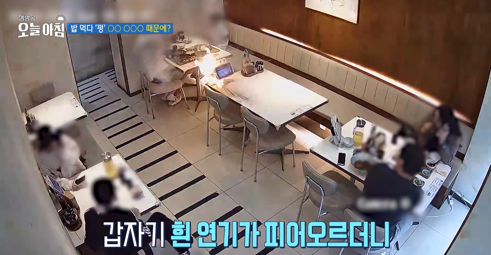
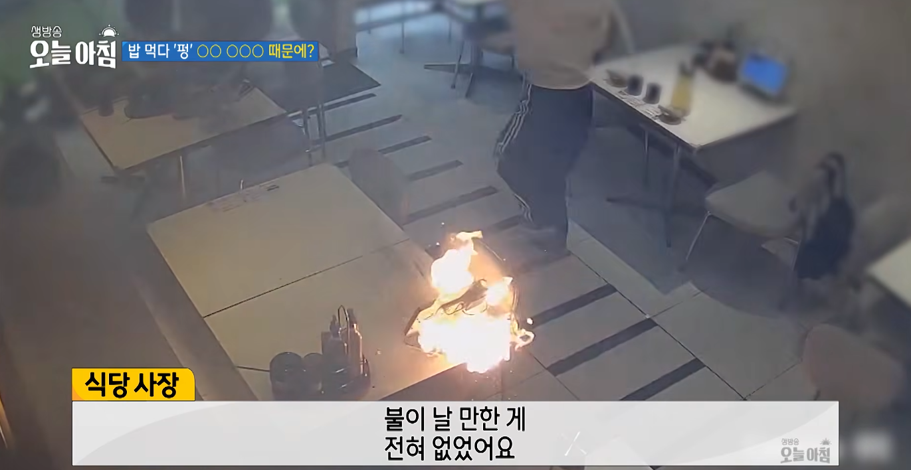
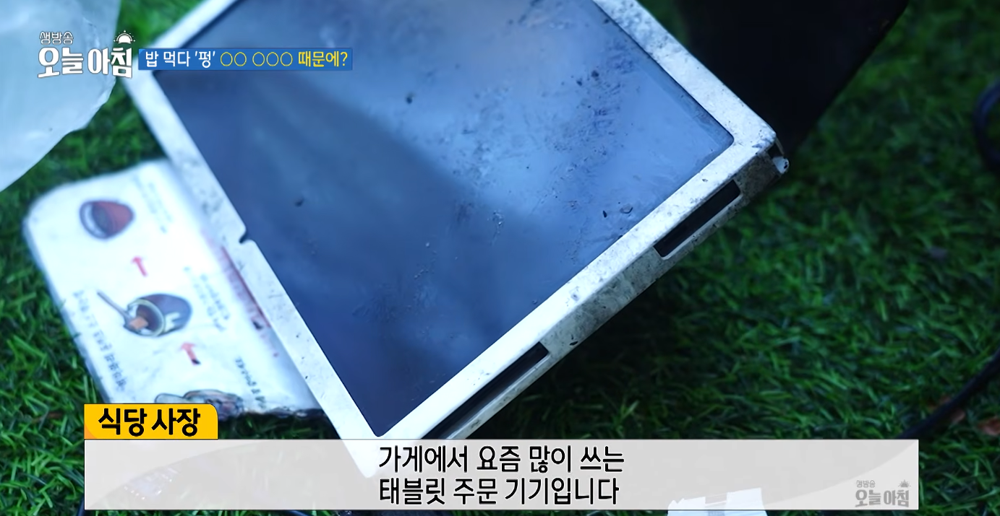
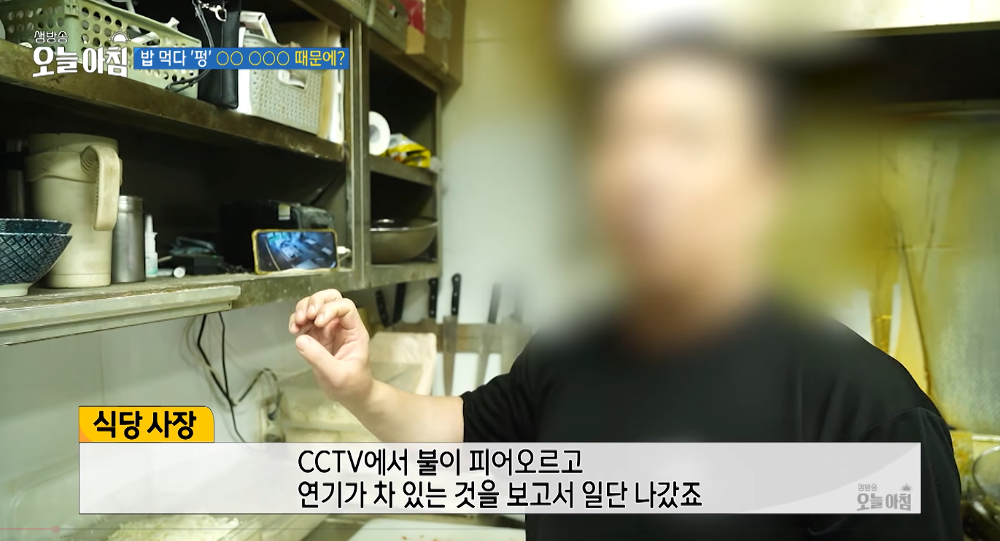

댓글에 주방얘기밖에 없음




댓글에 주방얘기밖에 없음
오 혹시 모르니 러시아랑 중국 망하라고 기도해보셈
걍 돈받고 하는거면 간판이나 쳐만들지 생각 꼬라지 ㅋㅋ
이게그콩스프인가뭔가하는거냐
암튼 불나서 망할 각인건 맞구요ㅋㅋㅋㅋㅋ
저 사진만 봐서는 미치도록 더러운지 모르겠는데
오른쪽에 노란거 안보임?
와 대박
커텐인줄...
벽에 기름때 X됨
벽기름때+선반에 먼지낀거
우리 동네다 경기도 양주시 옥정동...다신 안사먹어야지
나 일하면서 글씨 좆같은 간판 만들때마다 불나라고 기도했었는데 설마...?